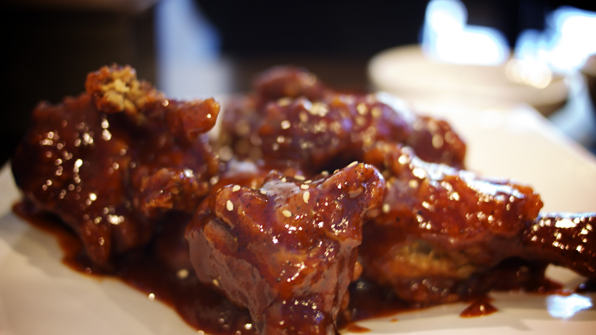

Korean Fried Chicken

Description
Korean fried chicken is a unique take on the classic fried chicken, renowned for its crispy, thin coating and tender, juicy meat inside. The chicken is usually double-fried, which gives it an extra-crunchy texture that holds up well even when coated in flavorful sauces. The most popular variety is yangnyeom chicken, which is tossed in a sticky, sweet, and spicy sauce made with ingredients like gochujang (Korean chili paste), garlic, soy sauce, and sugar. It’s often served with pickled radish on the side, balancing the heat with a refreshing crunch. What sets Korean fried chicken apart is the contrast between the crispy exterior and the moist interior, making every bite an addictive combination of flavors and textures.
Ingredients
For Chicken:
- 1.5 to 2 lbs (about 700–900g) chicken wings or boneless thighs (cut into bite-sized pieces)
- 1 tsp salt
- ½ tsp black pepper
- 2–3 cloves garlic, minced
- 1 tsp grated ginger (optional)
- 1 cup potato starch or cornstarch (you can also use all-purpose flour, but starch gives more crispiness)
- Oil for deep frying (e.g., vegetable or canola oil)
For the Sauce:
- 2 tbsp soy sauce
- 2 tbsp gochujang (Korean chili paste)
- 2 tbsp honey or sugar
- 1 tbsp rice vinegar (or white vinegar)
- 1 tbsp minced garlic
- 1 tbsp ketchup (optional, for sweetness and depth)
- 1–2 tsp sesame oil (optional, for extra flavor)
- Sesame seeds (for garnish, optional)
- Sliced green onions (optional garnish)
Steps
Marinate the Chicken
- Cut chicken into bite-sized pieces.
- Marinate with salt, pepper, minced garlic, and optionally grated ginger.
- Let it sit for at least 30 minutes.
Prepare the Coating
- Dredge the marinated chicken in flour or potato starch.
- Let it rest for a few minutes.
- Repeat the coating one more time for extra crispiness.
First Fry
- Heat oil in a deep fryer or heavy pot to around 325°F (160°C).
- Fry the chicken pieces until cooked through, about 6–8 minutes.
- Remove and let them drain on a rack or paper towels.
Second Fry
- Increase oil temperature to around 375°F (190°C).
- Fry the chicken again for 2–3 minutes until golden and crispy.
- Drain excess oil.
Make the Sauce
- In a saucepan, mix soy sauce, gochujang, honey (or sugar), minced garlic, and vinegar.
- Simmer until the sauce thickens slightly.
Toss the Chicken
- Add the fried chicken to the sauce and toss to coat evenly.
Serve
- Serve hot with pickled radish and a cold drink like beer
Want to go back to the Homepage? Click here